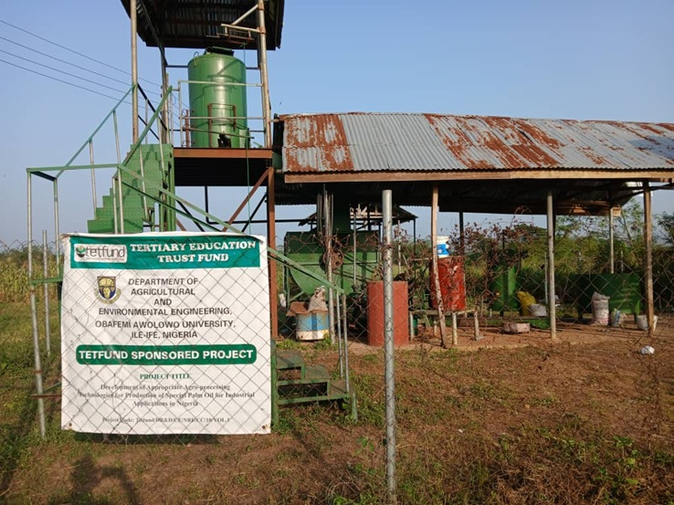

The presence of major academic institutions makes Ife a crucial city in Nigeria’s intellectual and services sector.
Ile-Ife houses One of West Africa's top universities, "Obafemi Awolowo University (OAU) ". OAU drives a high demand for housing, catering, retail, and transportation services, supporting thousands of small businesses.
Agriculture
Agriculture remains the backbone of the local economy. The surrounding region has fertile land suitable for:
Cocoa (a major cash crop in southwestern
Nigeria)
Oil palm and palm products
Cassava, yam, maize, and
vegetables
One of the most regnonized farm site is "Obafemi Awolowo University (OAU) Teaching and Research Farm".

Tourism
Ile-ife is home to many tourist attraction that depicts its culture and heritage.
One of the most popular site is "The Queen Moremi Statue of Liberty"
The Queen Moremi statue (Moremi Ajasoro Statue of Liberty) is the tallest in Nigeria and holds the title of the tallest single statue of a woman in Africa. Standing 42 feet (about 12.8 meters) tall, it was unveiled in 2016 in Ile-Ife, Osun State, and is noted for being 100% locally constructed.
Trade Economy
Ife has a vibrant informal economy, such as;
Open markets
micro-enterprises
Street vending
Small shops
Artisan services
A well known center for trade, which serve as hubs for foodstuffs, textiles, and household goods is "Oja Ife"